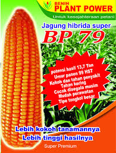

Pilihan Bibit Terbaik Pertanian Pertamanan

Pupuk Terbaik Tanaman
jenis pupuk terbaik untuk mawar
Dengan mengetahui cara untuk membeli pupuk, maka sudah saatnya kamu memilih dan membeli pupuk untuk digunakan di tanaman kamu. Berikut lima diantara banyak pupuk terbaik untuk tanaman...Baca selengkapnya >>>>>

Baca selengkapnya >>>>>
Jagung Hibrida
Hibrida 79
Menjaga ketersediaan bahan organik (alami) dalam tanah adalah diantara kunci utama keberhasilan bercocok tanam...Baca selengkapnya >>>>>